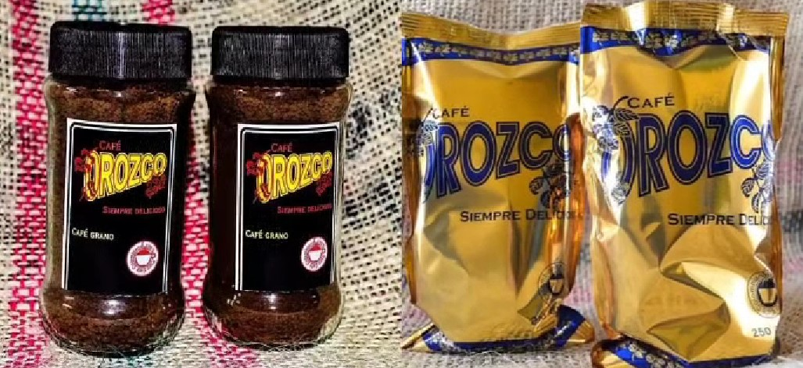

Finca La Julia
Una finca cafetera en las montañas locales (entre 1420 y 1700 metros de altura) que cultiva granos varietales con procesos sostenibles y de alta calidad.
Trujillo produce cafés de alta montaña y de especialidad, junto a una activa oferta agrícola propia del eje cafetero.
Una finca cafetera en las montañas locales (entre 1420 y 1700 metros de altura) que cultiva granos varietales con procesos sostenibles y de alta calidad.

Empresa familiar dedicada a la producción y exportación de café arábigo 100% colombiano con arraigo en la región.

Marca local de café de especialidad cultivado en la parte alta de las montañas de Trujillo.

En el casco urbano, ideales para disfrutar bebidas de origen y postres típicos.